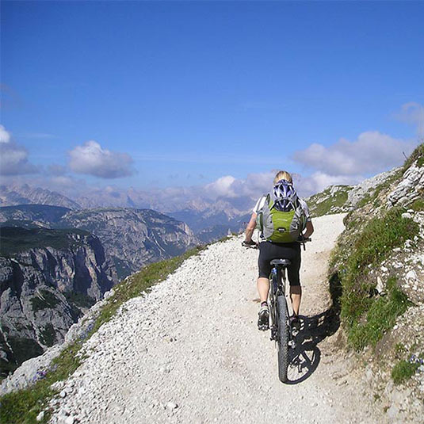

Mountain View
Cost: *$135/person
Length: 21 miles
Skill Level: Advanced
Location: Near Big Timber
This challenging mountain trail is packed with adventure and breath taking views. Experienced cyclers rank this tour number one, and for good reason. The trail conditions vary as you make your way up the winding gravel slopes. Rocky climbs along the trail present a considerable challenge, but once you make your way past these slopes, you are immediately rewarded for your efforts by spectacular the mountain views and cool mountain breezes.
